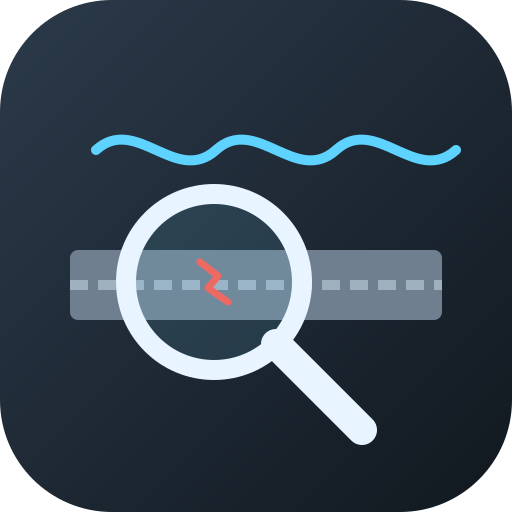
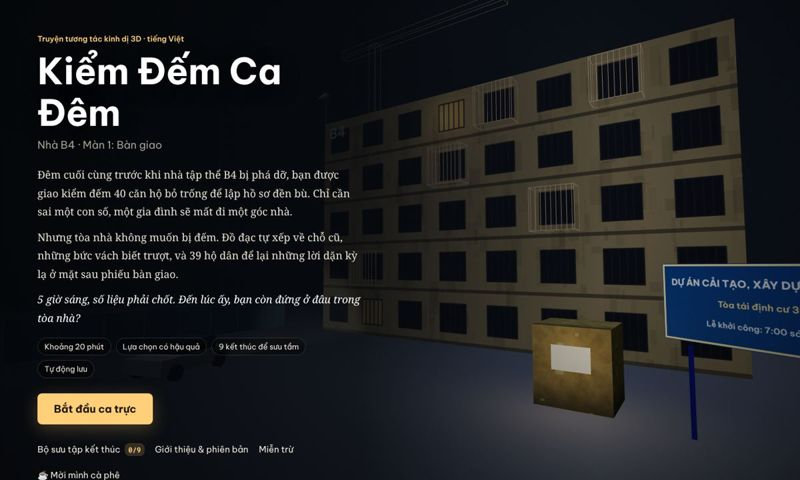
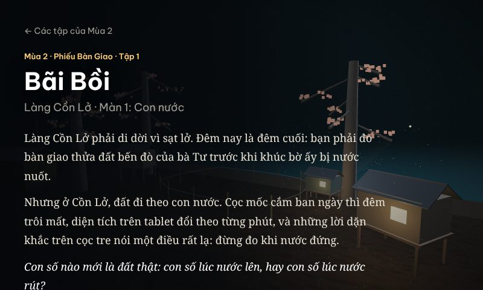
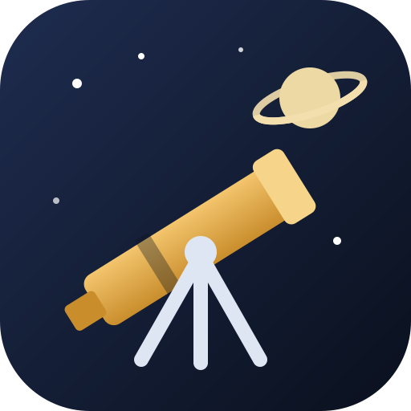

Đo huyết áp tại nhà sao cho đúng
Ngồi nghỉ 5 phút, tay ngang tim, đo 2 lần cách nhau 1 phút.
Sắp ra mắtCó sức khỏe là có tất cả. Ở đây có góc cho thân, cho tâm, cho trí – và mỗi ngày mỗi góc có một điều mới. Bấm vào bất kỳ đồ vật nào trong phòng để ghé góc đó.
Lần đầu ghé thăm?
Cơ thể có khoảng 30 nghìn tỷ tế bào, ngày nào cũng có tế bào già đi và tế bào mới thay thế. Giấc ngủ, bữa ăn, hơi thở, vận động và cả niềm vui đều là "nguyên liệu" cho chúng. Chăm sóc đủ ba phần thì mới có sức để làm việc và sáng tạo.
–
Đánh dấu những việc bạn đã làm. Danh sách chỉ lưu trên máy của bạn và tự làm mới mỗi sáng.
| Vi chất | Vai trò chính | Có nhiều trong | Lưu ý |
|---|---|---|---|
| Sắt | Tạo hồng cầu, chở oxy | Thịt bò, gan, các loại đậu, rau xanh đậm | Ăn kèm ổi, cam để hấp thu tốt hơn; tránh uống trà, cà phê ngay trong bữa |
| Canxi | Xương, răng, co cơ | Sữa, sữa chua, đậu phụ, cá nhỏ ăn cả xương, tôm tép | Cần vitamin D để hấp thu |
| Vitamin D | Hấp thu canxi, miễn dịch | Nắng sớm, cá béo, lòng đỏ trứng | Người ít ra ngoài trời dễ thiếu |
| I-ốt | Hoạt động tuyến giáp | Muối i-ốt, rong biển, hải sản | Dùng muối i-ốt nhưng vẫn ăn nhạt |
| Kẽm | Miễn dịch, lành vết thương | Hàu, thịt, hạt bí, các loại đậu | Trẻ đang lớn cần đủ kẽm |
| Vitamin A | Thị lực, da, niêm mạc | Gấc, cà rốt, khoai lang cam, gan, rau xanh đậm | Hấp thu tốt hơn khi nấu cùng chút dầu |
| Folate | Tạo tế bào mới, thai kỳ | Rau lá xanh, các loại đậu | Phụ nữ chuẩn bị mang thai nên hỏi bác sĩ về acid folic |
| Vitamin B12 | Thần kinh, tạo máu | Thịt, cá, trứng, sữa | Hầu như không có trong thực vật – người ăn chay trường cần nguồn bổ sung |
| Magie | Cơ, thần kinh, giấc ngủ | Các loại hạt, ngũ cốc nguyên hạt, rau xanh, chuối | Gạo lứt giữ được nhiều hơn gạo trắng |
| Omega-3 | Tim mạch, não | Cá thu, cá hồi, cá trích, hạt lanh, óc chó | Ăn cá 2 lần mỗi tuần |
Thông tin giáo dục sức khỏe chung. Uống viên bổ sung liều cao khi chưa có chỉ định có thể gây hại – hãy hỏi bác sĩ.
Một phút thở cùng quả cầu, vài phút thiền có chuông, hay một lời mời nhỏ cho hôm nay.
Thở bằng mũi, để bụng phồng lên khi hít vào. Thấy chóng mặt thì dừng lại và thở bình thường.
Cách làm, lộ trình cho người mới, ai cần lưu ý – có khung thở để tập ngay trong bài.
Đọc bàiVòng tròn co giãn dẫn nhịp, nền âm thanh sóng biển dâng lên theo hơi thở, chuông bát báo nhịp và giọng đọc hướng dẫn. Năm kỹ thuật đi từ nền tảng thở bụng đến nấc sâu 4-7-8, tổng hợp từ các bài giảng về hơi thở của BS. Trần Văn Phúc (số 011, 068, 117, 120, 121, 134, 135) và đối chiếu y văn. Miễn phí, tiếng Việt và tiếng Anh, dùng được khi không có mạng.
Tổ chức Y tế Thế giới khuyến nghị người trưởng thành vận động cường độ vừa 150–300 phút mỗi tuần, cộng 2 buổi tập sức mạnh. Mười phút đi bộ nhanh cũng được tính.
–
–Làm chậm, đúng tư thế, không cố khi đau. Có bệnh tim mạch, khớp hay đang mang thai, hãy hỏi bác sĩ trước.
Ví dụ một tuần 160 phút: 20–40 phút mỗi buổi, nghỉ thứ Tư và Chủ nhật.
Huấn luyện viên bỏ túi: lộ trình từ thói quen nhỏ, 48 bài tập minh họa 3D, thực đơn món Việt, ăn chay theo âm lịch, báo cáo tuần – tháng – năm. Miễn phí, dùng được khi không có mạng, tiếng Việt và tiếng Anh.
Những việc nhỏ làm cùng nhau, cây gia phả để con cháu biết mình từ đâu đến, và vài bài hát vui cho cả nhà.
–
Lập cây gia phả cho cả nhà: thêm từng người hoặc nạp danh sách Excel kèm ảnh, chọn "tôi" để biết gọi từng người là gì cho đúng vai vế, nhớ ngày giỗ theo âm lịch, văn khấn mẫu, in gia phả khổ A0–A3 treo tường. Dùng được cho nhóm bạn, lớp học, phòng ban. Dữ liệu nằm trên máy của bạn (và Google Drive của bạn nếu muốn chia sẻ). Miễn phí, tiếng Việt và tiếng Anh, dùng được khi không có mạng.
Âm nhạc, nghệ thuật, thể thao, du lịch, ngắm sao, phân kim, lái xe. Mỗi ô đổi nội dung mỗi ngày.
Bấm để nghe ngay trong góc âm nhạc.
Nghe bài hát–
Thử ngay hôm nay, chụp lại và gửi cho mình ở góc chia sẻ.Bài viết trong góc này–
Bài viết trong góc này · bấm quả bóng trong căn phòng cũng được– · –
–
Xem trăng đêm nay–
Nhập vai phù thủy học việc, đi từ Level 0 lên Đại pháp sư: học hóa học thật của nghề tinh luyện vàng bạc qua 7 nhiệm vụ, 20 chương sách phép, phòng thí nghiệm 3D, bàn tính hóa chất và 12 câu thử thách. Trò chơi giáo dục, không phải hướng dẫn tự làm tại nhà.
Vào Học viện Giả kimKể cho Dũng nghe câu chuyện, cảm xúc, những cái tên bạn muốn có trong bài – cho bản thân, gia đình, người thương hay một dịp đặc biệt. Mời một ly cà phê và cùng viết nên bài hát ấy.
Gửi câu chuyện của bạn20 bài chọn từ kênh YouTube của anh Dũng: nghe khi đi bộ, khi tập thở, hay lúc cần một khoảng lặng.
Bấm vào ảnh để phát ngay trên trang. Xem toàn bộ hơn 160 video trên kênh YouTube.
–
Học thiên văn từ con số không, tự thiết kế và chế tạo kính thiên văn, rồi xem đêm nay có gì trên trời. Miễn phí, tiếng Việt, cài lên điện thoại và dùng được khi không có mạng.
Công việc chiếm phần lớn thời gian thức. Làm có phương pháp, học không ngừng và giữ an toàn là cách để nghề nuôi cả thân lẫn trí.

Trò chơi mô phỏng kiểm tra không phá hủy (NDT): nhận hợp đồng, chọn phương pháp PT, MT, UT, RT, hiệu chuẩn, đọc tín hiệu, đối chiếu tiêu chí và ký Đạt hay Loại bỏ. Kèm Học viện NDE 17 chương, 13 mô phỏng và mô hình 3D tương tác.
Bản chơi thử. Điểm trong game không thay chứng nhận nhân sự NDT.
Một cuốn sách gợi ý mỗi ngày và những bài viết của trang. Đăng ký nhận tin để được báo khi có bài mới.
–
–
Gửi câu trả lời của bạn ở góc chia sẻ – những câu hay có thể thành bài viết tiếp theo.
Từ cậu bé ngô khoai sắn, người thầy thuốc từng là bệnh nhân, qua bốn lần rẽ ngoặt nghề nghiệp, đến những buổi sáng thứ Bảy của Bác sĩ Trần Văn Phúc. Và vì sao trang này ra đời.
Tự dựng vòng xoắn 3D, thử đối chứng ngẫu nhiên, cược vào công thức Euler – và tin mới về giả thuyết Riemann tháng 11/2026.
Đọc bài Âm nhạc · MớiG–D–Em–C, capo, ba điệu đàn – và vì sao đổi hợp âm trễ nửa phách là cả nhóm hát chựng lại.
Đọc bài Múa · MớiNón, quạt, khăn, dáng xoang, “hoa tay” – và bước vào vòng xòe để thấy vì sao lệch nhịp là vòng đứt.
Đọc bài Âm nhạc · MớiTự chấm nốt cho một câu hát, nghe máy hát lại, và xem vì sao “gió” bị hát thành “giò” khi giai điệu đi ngược dấu thanh.
Đọc bài Múa · MớiNăm tư thế, xoay mở đúng và sai, thử kiễng chân giữ thăng bằng và xoay vòng không chóng mặt.
Đọc bài Thể thao · MớiĐừng ép dẻo khi cơ còn lạnh: công thức 4 bước, giãn cơ sau tập, kèm đồng hồ khởi động 5 phút.
Đọc bài Thể thao · Mới · 3DTự “phạm” luật việt vị trên sân 3D, đổi sơ đồ 4-4-2, 4-3-3, 3-5-2, học cách xem trận.
Đọc bài Thể thao · Mới · 3DĐánh an toàn hay cắt qua hồ? Tự chơi một hố par 4 và tự quyết có cộng gậy phạt.
Đọc bài Thể thao · Mới · 3DBốn kiểu bơi trên bể Olympic 3D, cùng sức khác tư thế, luật lặn 15 m, an toàn dưới nước.
Đọc bài Hội họa · MớiMột cảnh vẽ theo bốn trường phái, kính lúp soi nét cọ, tắt sáng–tối để thấy tranh “đổ”.
Đọc bài Âm nhạc · MớiNghe một giai điệu Beethoven theo bốn thể loại và tự chọn cách giải tỏa một hợp âm căng.
Đọc bài Tập thởThay đếm cừu bằng đếm nhịp thở: cách làm, lộ trình cho người mới, ai cần lưu ý. Có khung thở để tập ngay.
Đọc bàiNgồi nghỉ 5 phút, tay ngang tim, đo 2 lần cách nhau 1 phút.
Sắp ra mắtVì sao người ăn chay trường cần chú ý, và bổ sung thế nào.
Sắp ra mắtÂm lịch, tuần trăng và mùa thu nhìn từ góc khoa học.
Sắp ra mắtGiấc ngủ giúp ghi nhớ và "dọn dẹp" ra sao.
Sắp ra mắtDanh y thời Trần và tinh thần dùng thuốc nam.
Sắp ra mắtMỗi ngày một câu đố mới. Nghĩ ít nhất một phút trước khi bấm xem đáp án nhé.
–
–

Truyện tương tác kinh dị tâm lý có bối cảnh 3D: đêm cuối trước khi nhà tập thể B4 bị phá dỡ, bạn phải kiểm đếm 40 căn hộ bỏ trống – nhưng tòa nhà không muốn bị đếm. Trọn bộ 4 màn, mỗi lựa chọn đều có hệ quả.
Không khí rùng rợn, hợp người lớn và thiếu niên lớn.

Một năm sau nhà B4, Thục Anh đi kiểm đếm bốn khu đất sắp đổi chủ. Tập 1 · Bãi Bồi: đêm cuối của làng Cồn Lở trước khi di dời, đất đi theo con nước, cọc mốc cắm ban ngày thì đêm trôi mất. Đọc bảng con nước, giao hội từ ba cây gạo, và chọn con số mình dám ký.
Đã có Màn 1. Chơi riêng vẫn hiểu, không cần chơi Mùa 1 trước.
Bài tập cho “Trí”: nhìn, nghi ngờ, thử lại – rồi mới tin. Mỗi bài trong góc này đều có hình để bạn tự bấm, tự kiểm tra bằng mắt và bằng máy.
Một hình là vòng xoắn Ulam thật (61 × 61 số). Hình kia rải cùng số chấm nhưng ngẫu nhiên. Mắt bạn có nhận ra không?
Chọn A hoặc B.
Sắp tới: số nguyên tố sinh đôi, xoắn ốc hoa hướng dương, “khi máy chấm bài toán”. Muốn đọc bài nào trước? Nhắn cho mình.
Căn phòng ấm hơn khi có thêm người. Trả lời câu hỏi hôm nay, gửi bức vẽ, bài thơ, mẹo sống khỏe của bạn, hoặc rủ người thân cùng ghé.
Mình đọc hết thư. Những câu chuyện hay, nếu bạn đồng ý, sẽ được kể lại trên trang (có thể giấu tên).
Gửi cho bố mẹ, anh chị em, bạn bè – ai cũng có một góc hợp với mình.
Để lại email, mình sẽ gửi một lá thư ngắn khoảng 2–4 tuần một lần:
Bài viết sức khỏe, khoa học, lịch sử mới ra
Bài hát mới trên kênh YouTube
Ứng dụng mới và tính năng mới (như bản mới của Tôi & Gia Đình)
Hiện tượng thiên văn đáng xem sắp tới
Khung đăng ký đang được mở. Trong lúc chờ, bạn có thể gửi email với tiêu đề "Đăng ký nhận tin", mình sẽ thêm bạn vào danh sách.
✉️ Gửi email đăng kýBạn sẽ nhận một thư xác nhận – bấm vào đường link trong thư là hoàn tất. Email chỉ dùng để gửi bản tin này, không chia sẻ cho ai. Mỗi thư đều có nút Hủy đăng ký, bấm một lần là xong.
Mở thẳng trên trình duyệt, không cần đăng ký tài khoản. Nhiều ứng dụng "cài" được lên màn hình điện thoại và dùng cả khi không có mạng.
app.hlvsuckhoe.com
Lộ trình tập luyện, 48 bài tập 3D, thực đơn món Việt, ăn chay theo âm lịch.
tho.hlvsuckhoe.com
Tập thở chậm cùng vòng tròn, chuông bát và giọng đọc. 4-7-8, thở bụng, ngân âm "M".

thienvan.hlvsuckhoe.com
Học thiên văn, tự chế kính, bầu trời đêm nay, dự báo nhật nguyệt thực.
giadinh.hlvsuckhoe.com
Cây gia phả, cách xưng hô đúng vai vế, ngày giỗ âm lịch, in gia phả treo tường.
phankim.hlvsuckhoe.com
Trò chơi giáo dục hóa học: nhập vai phù thủy tinh luyện vàng bạc, sách phép, phòng 3D, chứng nhận.
hvflaw.hlvsuckhoe.com
Game mô phỏng kiểm tra không phá hủy: PT, MT, UT, RT và Học viện NDE 17 chương.
kiemdem.hlvsuckhoe.com
Truyện tương tác kinh dị tâm lý 3D, 4 màn, bối cảnh nhà tập thể Hà Nội.
kiemdem2.hlvsuckhoe.com
Phiếu Bàn Giao: bốn khu đất, bốn ca đêm. Tập 1 Bãi Bồi, làng ven sông đất đi theo con nước. Mới có Màn 1.
Gửi ý tưởng của bạn – ứng dụng tiếp theo có thể ra đời từ chính ý tưởng ấy. Hoặc nếu bạn muốn xây dựng ứng dụng của riêng mình, hãy mời Dũng một ly cà phê, trợ lý của Dũng sẽ liên hệ và giúp đỡ bạn.
📲 Muốn mở bằng một chạm như ứng dụng thật? Xem cách cài lên điện thoại – mất chưa tới 1 phút.
Các ứng dụng của trang cài thẳng từ trình duyệt: không cần CH Play hay App Store, không cần tài khoản, miễn phí. Cài xong có biểu tượng riêng, mở toàn màn hình và dùng được cả khi mất mạng.
Bước 1 – mở ứng dụng muốn cài:
Bước 2 – làm theo máy của bạn:
Xin chào, mình là Nguyễn Đức Dũng. Mình là người yêu thích khoa học, mê du lịch, thích gần gũi thiên nhiên và không thể sống thiếu âm nhạc. Bên cạnh đó, mình dành nhiều thời gian tìm hiểu về sức khỏe – dinh dưỡng, vận động, hơi thở, giấc ngủ – cùng nhiều lĩnh vực khác như thiên văn, lịch sử, công nghệ.
HLV Sức Khỏe ra đời từ mong muốn đơn giản: những gì mình học được, ghi chép được, viết thành bài hát hay làm thành ứng dụng thì chia sẻ lại để mọi người cùng dùng – miễn phí, dễ hiểu và gần gũi với người Việt. Cảm hứng lớn nhất đến từ những buổi sáng thứ Bảy nghe Bác sĩ Trần Văn Phúc: đọc câu chuyện ở đây.
Nếu bạn thấy các thông tin và ứng dụng trên trang hữu ích, hãy mời người phát triển một ly cà phê. Mỗi ly cà phê là thêm động lực để mình tiếp tục duy trì và phát triển trang.
Các ứng dụng: HLV Sức Khỏe · BreathSync · Xưởng kính thiên văn · Tôi & Gia Đình · Phù thủy Phân kim · The Invisible Flaw · Kiểm Đếm Ca Đêm · Kiểm Đếm Ca Đêm Mùa 2 · Kênh YouTube · Liên hệ: nddzungx@gmail.com
Ủng hộ tùy tâm, hoàn toàn tự nguyện – trang và các ứng dụng vẫn miễn phí đầy đủ. Xin chân thành cảm ơn!

NGUYEN DUC DUNG
BIDV · 3210256468
Mở ứng dụng ngân hàng → Quét QR (hoặc chụp màn hình rồi chọn ảnh QR).
PayPal → Gửi tiền → nhập email: ndd.phateco@gmail.com